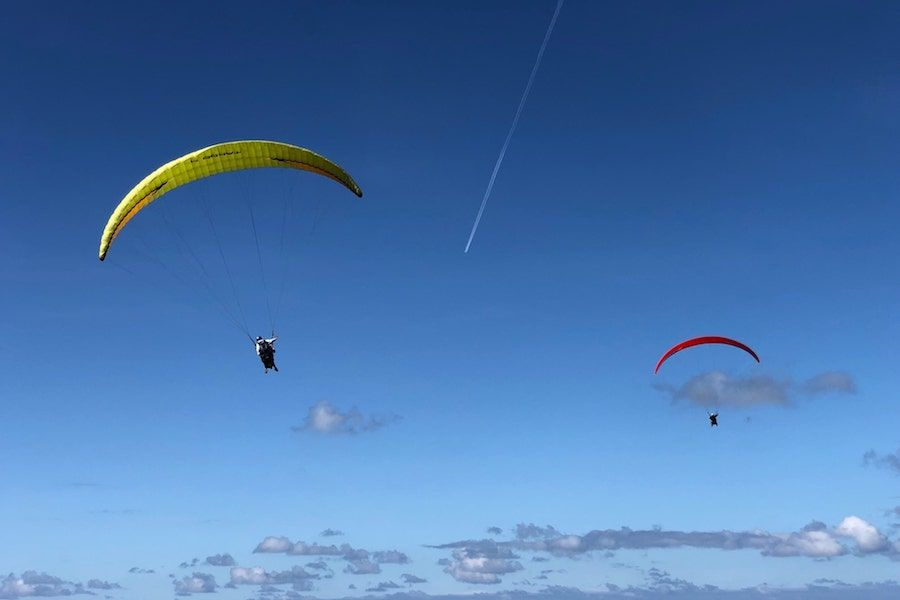
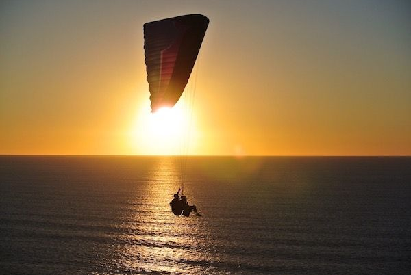

¿Qué es el parapente?
El parapente es una aeronave ligera y flexible, hecha únicamente de “cuerdas y tela”. La disciplina deportiva se basa en el vuelo sin motor, despegando de una pendiente y volando aprovechando las corrientes térmicas y dinámicas. A continuación, os contamos un resumen de qué es el parapente, historia y modalidades. Así como también, dónde podéis practicar parapente.
La palabra parapente viene del francés, acrónimo de “parachute” que significa paracaídas y “pente”, cuyo significado es pendiente. En inglés, parapente se dice “paragliding”.
Historia del parapente
La historia del parapente empieza a principios de los 60, cuando ingenieros de la NASA diseñaron paracaídas con campanas semi-esféricas y celdas inflables para así recuperar las cápsulas espaciales. Más tarde, en 1978 paracaidistas franceses empezaron a despegar de laderas para entrenar los aterrizajes. Poco a poco, empezaron a modificar los paracaídas para lograr más planeo y mejor prestaciones. Y, así fue como los montañeros descubrieron que la forma más rápida de descender las montañas era despegando desde las cumbres. Hoy en día los parapente siguen evolucionando mejorando el planeo, los materiales y la seguridad.
Modalidades y tipos de parapentes
Existen varias modalidades de vuelo en parapente. Probablemente la modalidad más popular sea Cross Country, que consiste en realizar distancia ayudándose de las térmicas. Otra modalidad es el vuelo acrobático, donde el parapentista realiza maniobras como: wingovers, barrenas, SAT, helicópteros, Infinity Tumbling, etc. En el Free Style, se combinan maniobras acrobáticas básicas, vuelo de ladera y vuelo libre. En la modalidad vuelo con motor están el paramotor y paratrike. En ambos casos se vuela con la ayuda de un motor. En el paramotor se despega a pie. El vuelo en parapente biplaza o tandem, puede ser con o sin motor, y tal como indica el nombre vuelan dos personas a la vez.
Y, por último, dos de las modalidades más recientes son Speed Flying y Speed Riding. El Speed Flying se basa en volar cerca del relieve a gran velocidad con velas o parapentes que van desde los 7 hasta los 17 metros. El Speed Riding, en cambio, consiste en descender sobre la nieve con Skis y un parapente algo más pequeño que el de Speed Fly.